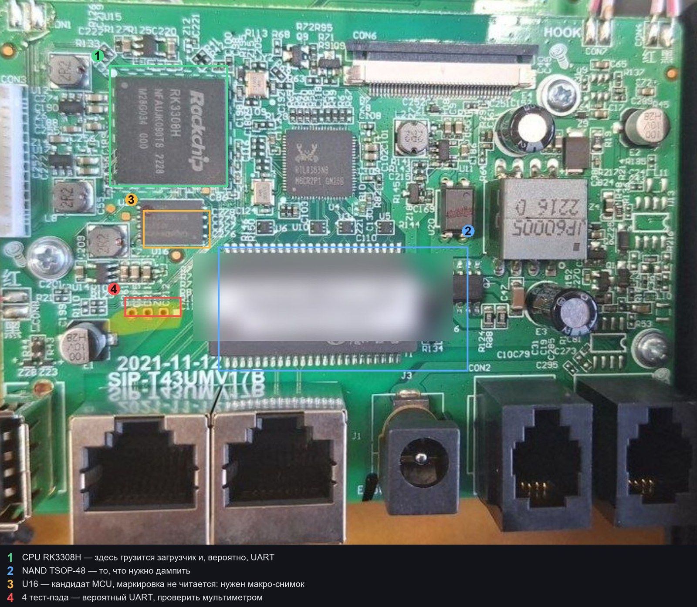

USB-пины и режим maskrom
Как определить назначение четырёх контактов USB на плате и как попробовать снять дамп флеша без паяльника через режим maskrom SoC Rockchip.
[факт] SoC: RK3308H. Rockchip поддерживает загрузку в режиме maskrom по USB, при этом rkdeveloptool умеет читать и записывать флеш.
1. GND — прозвонкой
- Плата выключена, мультиметр в режим прозвонки.
- Один щуп — на металл USB-разъёма, экран, или заведомо земляной полигон.
- Вторым щупом по контактам: тот, что звонится (≈0 Ом) — GND.
2. VBUS — замером
- Плата включена, меряем каждый контакт относительно найденного GND.
- ≈5 В — питание (VBUS). С ним больше ничего не спутать.
- На остальных при включённой плате обычно 0…3.3 В, стабильных 5 В нет.
3. D+ и D- — перебором
- Остаются два контакта; это данные.
- Собрать одну комбинацию, подключить, посмотреть, перечисляется ли устройство.
- Не перечисляется — поменять местами. Перепутанные D+/D- не горят, просто не работают.
4. Меры предосторожности
- Никогда не подавать 5 В на D+/D-: сперва достоверно определить VBUS.
- Если трубка питается от своего адаптера, использовать кабель только для данных (VBUS не подключён) — иначе два источника питания на одной линии.
- Уровни на данных — 3.3 В, никаких 5-вольтовых переходников.
- Любые манипуляции с контактами — только при снятом питании, кроме самого замера напряжения.
5. Режим maskrom: что попробовать
Порядок на ПК:
# 1. поставить rkdeveloptool (Linux/WSL с USB-пробросом или Linux-машина)
# 2. выключить трубку, подключить USB к ПК
# 3. перевести SoC в maskrom (кнопка/замыкание на плате + подача питания)
lsusb | grep 2207 # Rockchip VID
rkdeveloptool ld # покажет, увидел ли загрузчик устройство
Если устройство видно:
rkdeveloptool rci # сведения о чипе и флеше, в том числе ёмкость (Flash Size)
rkdeveloptool rl 0 <секторов> out.bin
Важно: у rl три обязательных аргумента — начальный сектор, число секторов и файл. Сектор 512 байт, поэтому число секторов = ёмкость флеша в байтах / 512.
Пример: флеш на 128 МиБ = 134 217 728 байт → 134217728 / 512 = 262144:
rkdeveloptool rl 0 262144 out.bin
[гипотеза] Способ входа в maskrom на этой плате не проверен: у Rockchip это обычно кнопка восстановления, замыкание определённых контактов флеша или подача питания при подключённом USB. Если maskrom работает — дамп снимается по USB и выпаивать TSOP-48 не нужно.
[факт] Для maskrom не нужен ни UART, ни разборка дальше доступа к контактам.
Где что на плате

| № | Что это | Уверенность |
|---|---|---|
| 1 | CPU RK3308H — грузится загрузчик, на нём ищем UART | [факт] по маркировке |
| 2 | NAND TSOP-48 под наклейкой — цель дампа | [факт] по корпусу и обвязке |
| 3 | U16 — кандидат MCU, который выводит ключ | [гипотеза] маркировка на фото не читается |
| 4 | Четыре контакта рядом с U16 (три круглых + один квадратный) — вероятный UART | [гипотеза]; маркировка рядом не читается |
Что проверить мультиметром
- Общий провод: минус на экран или на конденсатор у разъёма питания.
- Четыре контакта у U16: на одном должно быть ~3,3 В — это питание; два других «дёргаются» при загрузке — это TX/RX; оставшийся — земля. Квадратный контакт обычно первый вывод.
- Порядок щупов: сначала измеряем напряжение, только потом подключаем USB-UART, и обязательно с общим проводом между платой и переходником.
- MCU: нужен макро-снимок маркировки U16 и соседних QFN — по фото на 1200 px текст не читается. Как только маркировка видна, ищем даташит и распиновку шины к SoC.
[гипотеза] Если пэды окажутся UART, консоль загрузчика — самый дешёвый вход: без пайки и без программатора.
Сниффинг шины MCU
Вынесено на отдельную страницу: Сниффинг шины SoC ↔ MCU — точки подключения, порядок, как проверить полученный ключ.
Карта разделов флеша
Взято из таблицы mtdparts самого загрузчика, флеш 128 МиБ:
| Раздел | Смещение | Размер |
|---|---|---|
| ubl | 0x00000000 | 1 МиБ |
| uboot | 0x00180000 | 1 МиБ |
| env / userenv | 0x00280000 / 0x00300000 | 512 КиБ каждый |
| rfs | 0x00380000 | 55,5 МиБ |
| cfg | 0x03B00000 | 12 МиБ |
| rfs2 | 0x047C0000 | 55,5 МиБ |
| klog | 0x07F40000 | 768 КиБ |
Для дампа это главное: под rfs отведено 55,5 МиБ, плюс есть вторая копия rfs2 — то есть на флеше лежат два тома, и оба стоит снять.
6. Если maskrom не заводится
Возврат к обычному пути: UART-лог → консоль U-Boot → дамп командами nand read + отдельно OOB → либо выпайка TSOP-48 с чтением в программаторе.
Подробности — на странице Инструкция человеку.